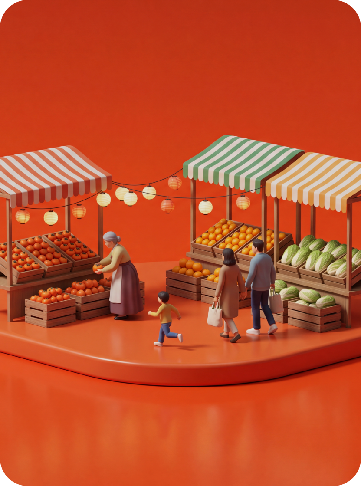
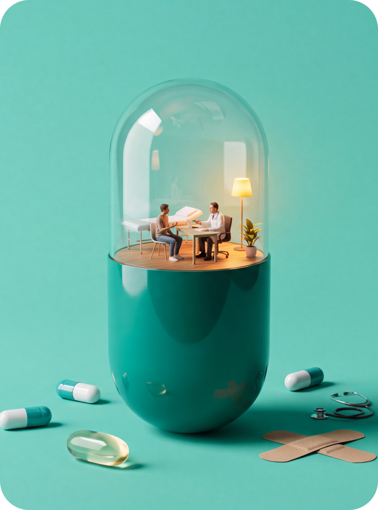
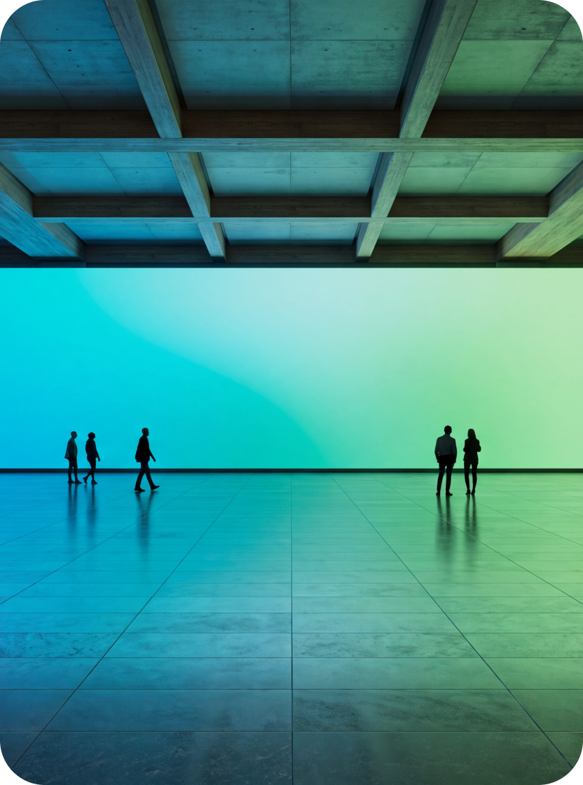
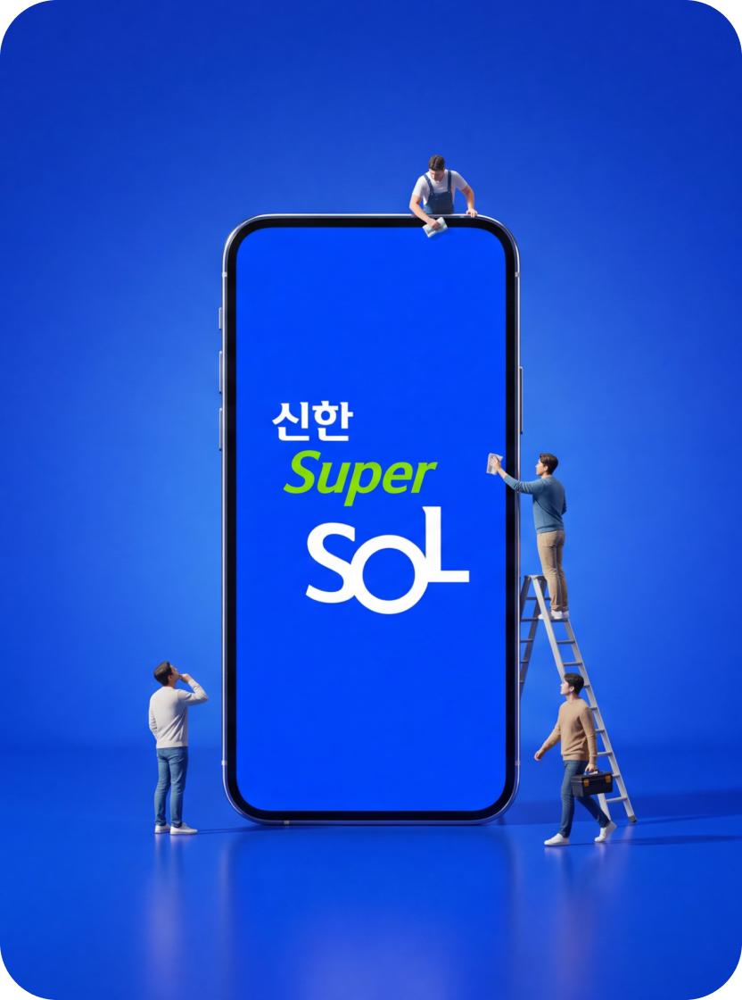
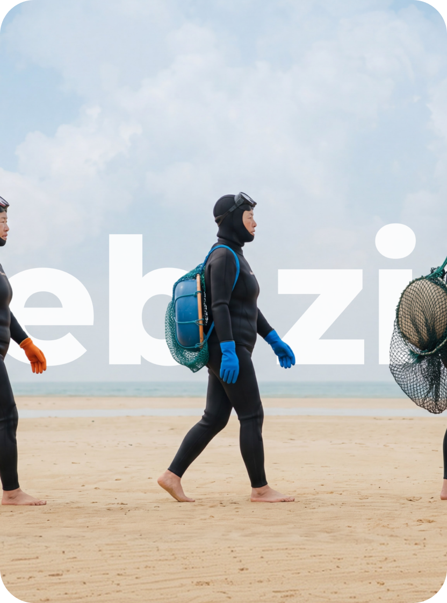
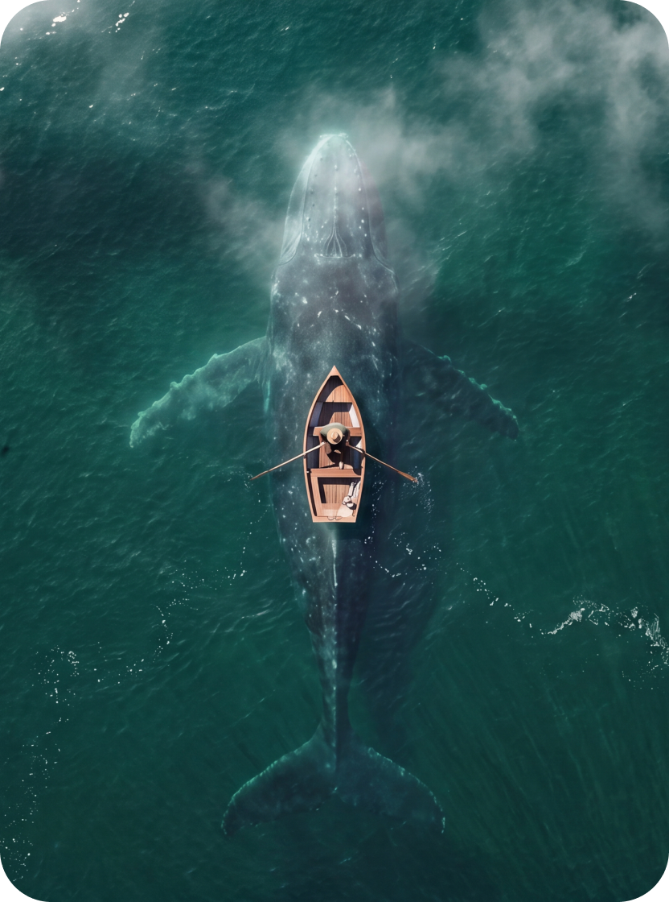
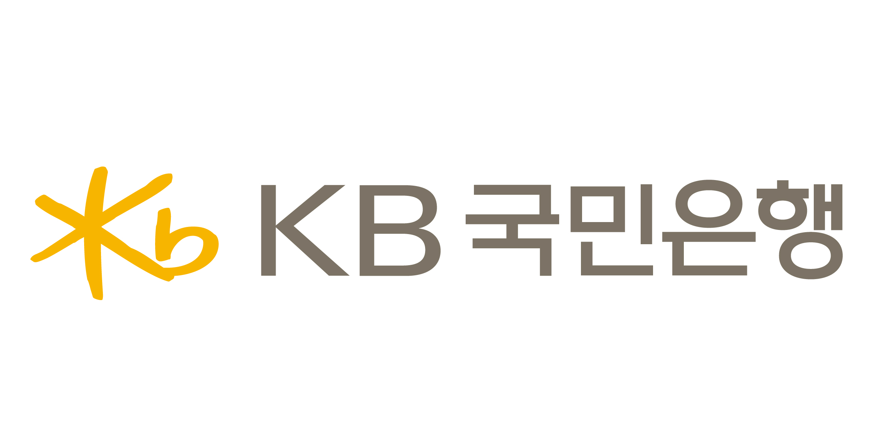

Mobile신한 SoL증권
Our Projects
결과로 증명하는 것, 그것이 인스플래닛의 방식입니다.
눈에 보이는 화면을 넘어 비즈니스의 본질을 꿰뚫고, 정교한 전략과 기술로
고객의 문제를 실질적인 가치로 바꿔왔습니다. 인스플래닛이 함께 만들어온 변화의 기록입니다.
Mobile모바일 뱅킹 앱
모바일 뱅킹 앱
UX 리뉴얼

Web글로벌 이커머스
글로벌 이커머스
브랜드몰 구축

ConsultingAI 추천 커머스
AI 추천 커머스
플랫폼 컨설팅
Mobile핀테크 간편결제
핀테크 간편결제
서비스

Web기업 브랜드
기업 브랜드
사이트 구축
Consulting물류 관리 시스템
물류 관리 시스템
컨설팅

Web라이프스타일
라이프스타일
커머스 플랫폼
Mobile모빌리티 예약
모빌리티 예약
플랫폼

Web미디어 콘텐츠
미디어 콘텐츠
포털 리뉴얼

Consulting헬스케어 데이터
헬스케어 데이터
대시보드
MobileO2O 서비스
O2O 서비스
모바일 리뉴얼
고객사
프로젝트명
분류
수행기간

KB 직원용 단말화면 개선
Etc.
2026.07.01~2027.07.01
KB스타뱅킹 앱 UX 고도화
Mobile
2026.05.01~2026.12.31
차세대 여신 시스템 구축
Consulting
2026.03.15~2027.09.30
통합 고객 포털 리뉴얼
Web
2026.08.01~2027.02.28
AI 상담 챗봇 도입
Etc.
2026.06.01~2027.06.01
마이데이터 서비스 구축
Web
2026.04.01~2026.11.30
KB증권 MTS 개선
Mobile
2026.09.01~2027.03.31
임직원 교육 LMS 구축
Web
2026.07.15~2027.07.15